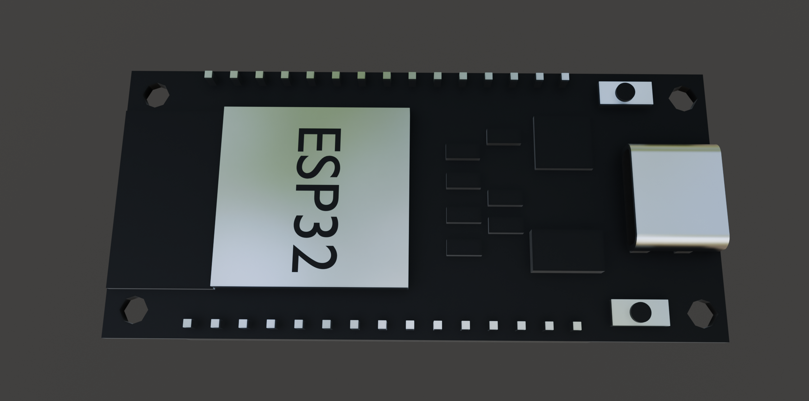

Precision Through Kinematics
We abandoned traditional DC motors for a fully articulated, servo-driven architecture. The result is sub-millimeter control and dynamic terrain adaptation.

The Control Signal Path

Human Interface
Bluetooth DualShock 4 Low-Latency Input

The Brain (ESP32)
Dual-Core 240MHz. Runs Inverse Kinematics Engine.

PWM Driver
16-Channel, 12-bit resolution servo controller.
MG90S
The Muscles
Metal Gear High-Torque Actuators.
Why MG90S Metal Gears Matter
Early prototypes using plastic-gear servos failed under dynamic loads. Arttous now exclusively utilizes MG90S actuators for all 12 joints (3 DOF per leg).
- Durability: Full metal gear train resists stripping during shock impacts.
- Torque: Delivers up to 2.2kg/cm torque at 6V for powerful lifting.
- Precision: Closed-loop control allows for precise angular positioning essential for stable walking gaits.


Inverse Kinematics (IK) Engine
Driving 12 motors simultaneously requires complex math. Our custom IK engine runs on the ESP32's second core in real-time.
Instead of manually moving each motor, the system calculates the exact angles needed for the foot to reach a specific 3D coordinate (X,Y,Z). This enables:
- Smooth, organic walking gaits (Trot, Crawl).
- Automatic body leveling on uneven ground.
- Dynamic stability control.
Technical Specifications
Power System
7.4V LiPo (2S) via 5A UBEC
Compute
ESP32-WROOM-32D
Actuators
12x MG90S (Metal Gear)
Degrees of Freedom
12 DOF (3 per leg)
Communication
Bluetooth 4.2 / WiFi
Frame Material
Additive PLA+ / PETG Composite